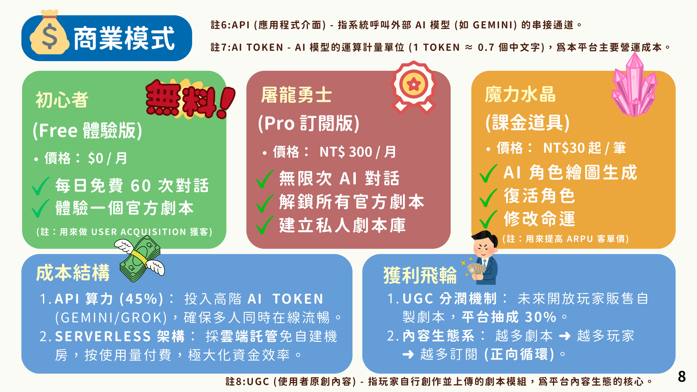

Phase 1 · 2026 Q1
MVP 上線與核心循環驗證
完成雙核引擎與單人冒險體驗，確認產品不是概念，而是可玩的原型。
最後一頁把未來節奏整理為 Roadmap 與 Go-to-Market，適合面向比賽評審、合作方或潛在用戶說明接下來要怎麼長大。
完成雙核引擎與單人冒險體驗，確認產品不是概念，而是可玩的原型。
讓創作者可以製作並上架自製模組，開始形成平台抽成與內容飛輪。
探索多人模式，並以 Spiel Essen 等國際展會作為海外市場入口。
